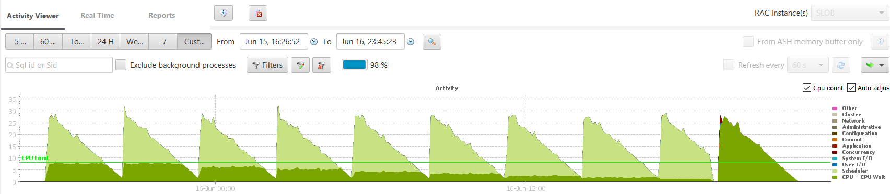

|
|
This was first published on https://blog.dbi-services.com/cpu_count (2016-06-17)
Republishing here for new followers. The content is related to the the versions available at the publication date
When you have less CPU threads than the number of processes that has something to run in CPU, the OS will schedule them to share the CPU resource. Increasing the workload at that point will not increase the throughput because you have reached the capacity of your system, and response time will increase because of queuing. Actually, performance will even decrease because of the overhead of context switching when trying to share the processors. When you don’t want the OS scheduler to do the resource sharing job, you can, and should, use Instance Caging. For sure, the database instance can do resource sharing more intelligently than the OS as it knows the kind of workload and the performance requirement of each process. I did some tests on a 8 CPU machine running SLOB from 32 concurrent sessions, then 31, then 30,… down to the last run with 1 sessions, each for 5 minutes. This is what you see on the right-most dark green triangle here:  After a very short library cache contention when all 32 sessions are parsing their statements. The each run go decreasing. The dark green here is labelled as ‘CPU + CPU wait’ and is coming from ASH where all sessions are on state ‘ON CPU’ even when they are actually in the OS runqueue. Of course, I’ve only 8 CPU threads, so I cannot have 32 sessions running on CPU.
The runs on the left where you can see the same but with some light green is from same runs but with Instance Caging active. I’ve a resource manager plan set and I’ve set CPU_COUT to 8 (the first run on the left), then 7, … down to 1. The dark green is still the ‘ON CPU’ state and with Instance Caging Oracle allows at maximum CPU_COUNT processes in that state. The remaining processes are switched to a waiting state, instrumented as ‘resmgr: cpu quantum’ and displayed in light green.
My goal is to show that you can increase the throughput with Instance Caging. I measured the logical reads per second and made an Excel chart from them. The blue lines are from different CPU_COUNT settings from 8 to 1. The orange line is from no setting CPU_COUNT which means that instance caging is not enabled. On the X axes you have the number of conccurent SLOB sessions I’ve run. What you see from the bluse lines is that the throughput increases linearly with the number of concurrent session until it reaches the limit: either the CPU_COUNT limit or the physical limit when CPU_COUNT is not set. Note that the CPU threads are not cores here. Tests were done on Oracle Public Cloud 4 OCPUs (aka OC5 compute shape) which are actually 8 threads from E5-2690 v2 Intel processors. This is why running on two threads here do not double the throughput. Actually, when running 8 sessions on 8 threads the throughput is only x6 from running one session on one thread.
The second goal is to compare Oracle instance caging with OS scheduler when instance is using full capacity of the server. On the top you can see the darker blue line which is when CPU_COUT is set to the actual number of CPU threads (CPU_COUNT=8). The orange line is when no CPU_COUNT is set: instance caging is disabled. The maximum throughput then, 3.6 MLR/s, is reached when we run same number of sessions as the number of CPU threads. What you see here is that when the server is overloaded scheduling at instance level is more efficient than scheduling at OS level. Without instance caging, the orange line, the LR/s degrades because of context switching overhead. So the recommandation here is to always do instance caging even if you have only one instance on your server.
Why is the instance caging algorithm better than the OS scheduler? Because it is focused at database processes workload. Here is the graphs of the ‘resmgr: cpu quantum’ wait times.
On the left, I’ve run with CPU_COUNT=8. When I have 32 concurrent sessions each of them spend 3/4 of their time waiting for CPU. Those waits are about 300 milliseconds. When I’ve only 9 sessions, each one have to spend only small part of their response time on waiting. They wait about 25 milliseconds on ‘resmgr: cpu quantum’. The wait time is not fixed and depends on the load. This makes sens: when you know you will have to spend a long time waiting, it’s better to have longer waits in order to avoid too many context switches. On the right, it’s the same but with CPU_COUNT=1 which gives x8 less CPU time to the processes. They will have to spend more time on waiting. And we see that the wait time is adjusted: can go up to 4 seconds time slices. The OS scheduler will never do that, putting a process on runqueue wait for several seconds, because the scheduler tries focus on the response time. It’s different with instance caging. When you know that you will have to spend a long time waiting, then it’s better to optimize throughput by lowering the context switching.
The recommandation is to enable instance caging: set a resource manager plan and set cpu_count. It’s not an option. There’s no additional costs for it. And it will always be better than letting the OS manager CPU starvation.
On Standard Edition 2, it’s even easier: Oracle Corp. enabled instance caging for you 
|
|
{kind=link}
{kind=link}
{kind=link}
So this is cached SLOB (LIOPS) on an Oracle VM right?
Another interesting thing to test would be to implement a large number of sessions all performing think time (slob.conf->THINK_*). I assure you that there are more bad choices made by the Linux scheduler when there are large numbers of processes coming runable from more diverse blocking such as IPC sem wakeup, sleep wake up (think time), latch sleep wakeup (poll() expiration). The method in this case would be to find the min and max sleep settings that run the CPU tuilization right to saturation and then test with that recipe.
Hi Kevin, yes it is cached SLOB on OVM (public cloud). Good idea, thanks.